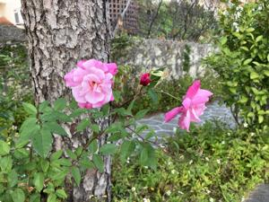
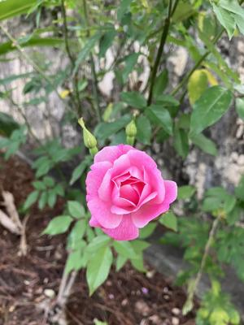
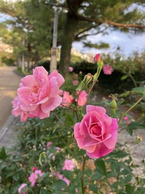
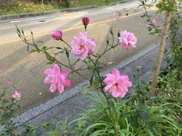

うるがいの話 ある日
最新: 道端の薔薇【うるがいの話 ある日】とは 一日だけのプログです
『うるがいの話』の最新一日だけのプログで、通信料が少なく経済的だ。カニの画像をクリックすると全ての日付が載る『うるがいの話』サイトを表示します
|
|
【うるがいの話】 うるがい(ｳﾙｶﾞｲ urugai)とは、『もずくがに』の名前でとても大きくなります。 |
|---|---|
|
|
【カミマヤーの話】 猫のことを方言でマヤーといいます。カミマヤー（kamimayaa）とは、神の猫のことです。 |
|
【たながぁの音楽】 たながぁ（ﾀﾅｶﾞｰ tanagaa）とは手長えびのことで、何種類かあり大きいのは車 エビぐらいになります。 |

|
【ぶながぁの話】 ぶながぁ(ﾌﾞﾅｶﾞｰ bunagaa)とは、赤い髪の毛、赤い身体、そして身長は１ｍ２０ｃｍ ぐらい、川の蟹を食べているの目撃された。場所は沖縄県国頭郡大宜味村のと ある村僕の隣近所に住んでいる爺さんから、聞いた話です。 |
|
|
【ギーマの話】 ギーマ(giima)とは、山原の里山に咲くスズランに似た、 花を付けます。実は食べられます、 気が付くと口の周りが紫になっています。 |
2024年02月01日 (木）道端の薔薇
21:09
ジョギングの途中、スマホで撮った４枚の写真。バラは数あるけれど・・・・
９時半から、贈与税の申告提出を無事すませる。今年の大きなやるべき事、終
えてほっとする。

１３時から、仕事を始める。４年ぶりである、当面は週に二日ほど、午後の半
日の勤務である。

仕事の帰りにＡＵで、コドモから頼まれたイアホン８のＳＩＭロックを解除さ
せる。店舗は、ガラガラで待つこと５分未満で終了、３千円を支払うとしたが
無料とのこと！。お、ラッキー、因みにいま利用しているアイホンＳＥはそも
そもＳＩＭロックが、行われていない機種とのこと、確認まで行った。歩いて
家に着いたのは、夕方６時２０分、今日のジョギングは無理だった。


２０時５５分 ビットコインの総資産 ￥１７、９３９（↓４９９）